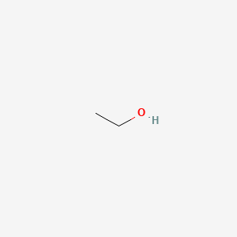

Organic Chemistry Lab Technique: Crystallization
The purpose of this experiment is to introduce the lab technique of crystallization, which is commonly used in the Organic chemistry
lab setting to purify crude solids. The experiment objective is to carry out crystallization of impure Acetahilide and prove its
purity by the melting point chemical property.
Molecules and Instruments
In experiment 3, students only deal with two molecules that are described below. For the sake of simplicity, students are only expected
annotate and describe molecules that are present in the organic chemistry lab as beginning and final products; intermediate compounds
and molecules do not have to be kept track of unless otherwise state. Since there is no intermediary molecule in lab 4, the two main
molecular structures are listed below.
- Acetnilide
- Molecular weight: 135.16 g/mol
- Melting point: 114.4 C
- Boiling Point: 304 C
- Density: Varies by temperature

- Ethyl Alcohol
- Molecular weight: 46.1 g/mol
- Melting point: N/A
- Boiling point: 78 C
- Density: 1.59 g/cm3
- Erlynmeyer flask
- Hirsh funnel
Experiment 3: Outline and Procedures
- Place 0.30g of Acetanilide in a 10-ml Erlenmeyer flask
- Add approximately 6 ml of ethyl alcohol (solvent) and boiling stone to another Erlenmeyer flask.
- Heat ethyl alcohol on hot plate
- Add hot ethyl alcohol with a pipette to acetanilide and heat
- Continually swirl the Erlenmeyer flask that contains the acetanilide with also adding drops of ethyl alcohol
- Allow disolved solution to cool in order to begin crystallization
- Place flask in an ice bath
- With a Hirsh funnel, vacuum the crystals and rinse with ethyl alcohol if necessary
- Allow sample of crystals to dry